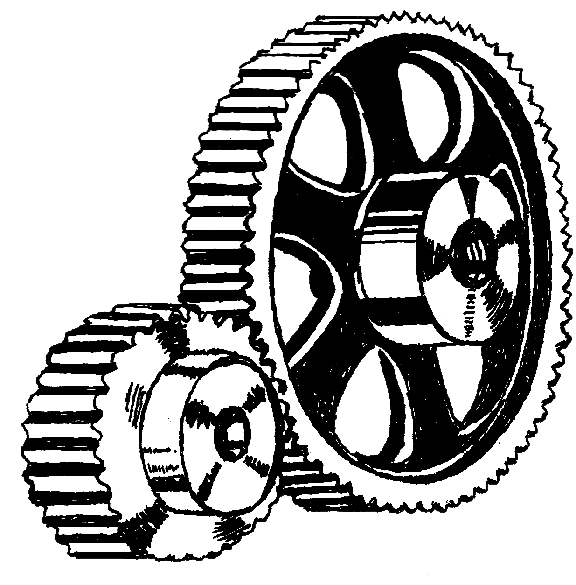
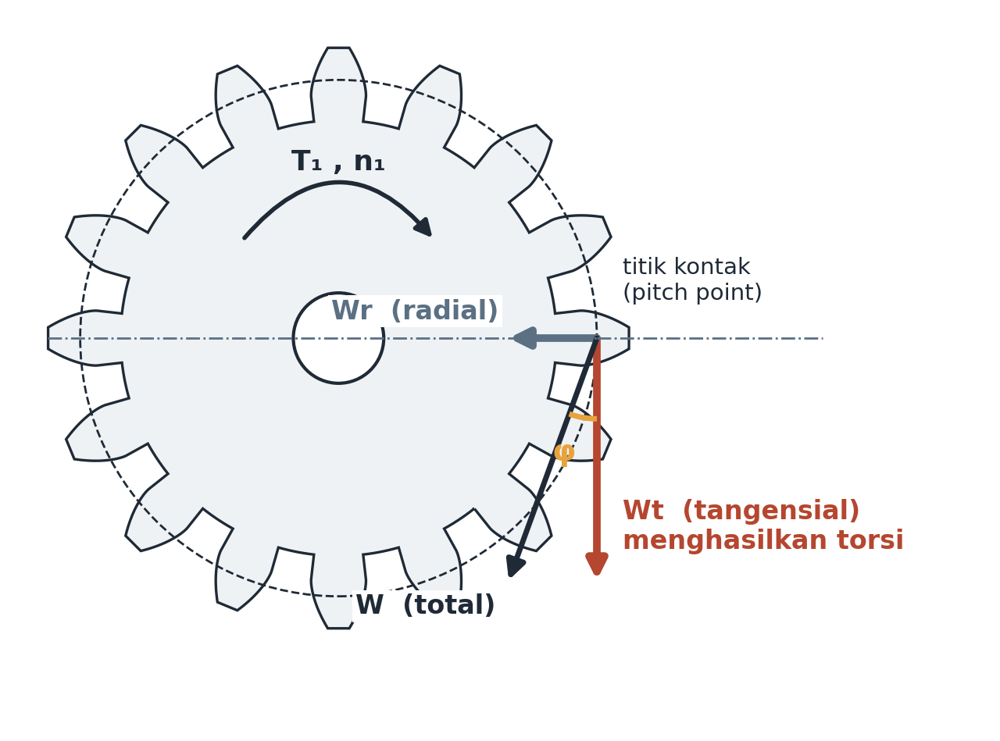

Pertemuan 10–11 · Sub-CPMK 4.1 · Geometri, gaya, Lewis + iterasi 12 kW

Contoh 1: N1=20, N2=60, m=3, n1=1.450 → d1=60, d2=180 mm; i=3; n2=483 rpm; C=120 mm; p=9,42 mm; F≈28–47 mm.
Contoh 2 (P=5 kW): V=π×60×1.450/60.000=4,56 m/s; Wt=5.000/4,56=1.098 N; Wr=1.098×tan20°=400 N; W=1.168 N; T1=32,9 N·m. Wt+Rr masuk diagram geser poros.

Tabel Y (φ=20°): N12→0,245; 15→0,290; 18→0,309; 20→0,322; 25→0,340; 30→0,359; 40→0,389; 60→0,422; 100→0,447.
Material (Shigley A-20): 1020 HR Sy=210; 1030 HR 260; 1040 CD 490; 1045 CD 530; 1050 CD 580 MPa. Pinion dibuat lebih kuat (siklus lebih banyak).
Contoh 3: Wt=1.098, V=4,56, m=3, F=30, Y=0,322, 1020 HR → Kv=1,75; σ=1,75×1.098/(30×3×0,322)=66,2 MPa; n=210/66,2=3,17 ≥ 3 ✓ tipis.
Contoh 4 (naik 12 kW, dimensi sama): Wt=2.634 N; σ=158,8 MPa; n=1,32 < 3 ✗. Perbaikan: (A) m=4,F=40 → n=2,74 belum aman; (B) tetap m=3 ganti 1045 CD → n=3,34 ✓ paling murah (casing tetap); (C) keduanya → n=6,93 overdesign.
Mode gagal: patah lentur (Lewis), pitting (Hertz/AGMA), aus/scoring (pelumasan).
Tiga tuas menaikkan n gigi tanpa ubah rasio? Mana paling murah pada kasus 12 kW?
Mengapa pinion minimal 18 gigi?
Disusun dari 8 PPT kuliah + RPS Desain Komponen Mesin (3MES40016), Prodi Pendidikan Teknik Mesin FT Unimed. Rujukan: Shigley et al. (2015), Mott (2018), Juvinall & Marshek (2020), Sularso & Suga (2004).